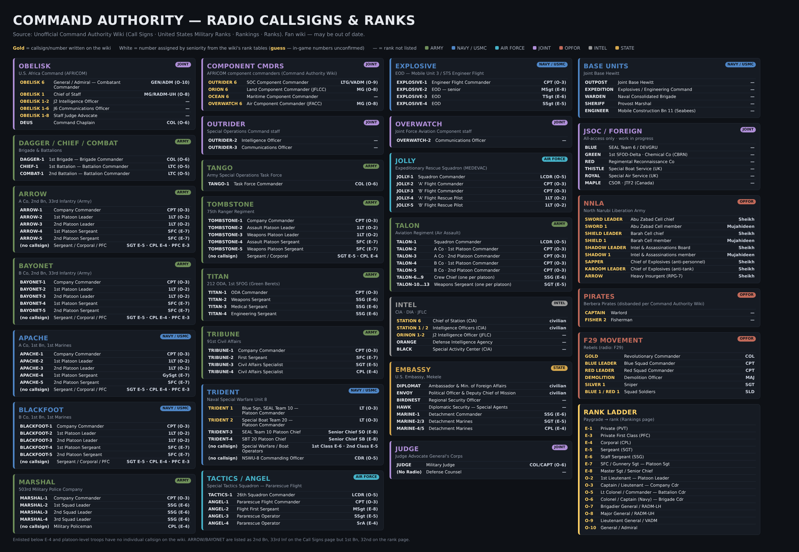
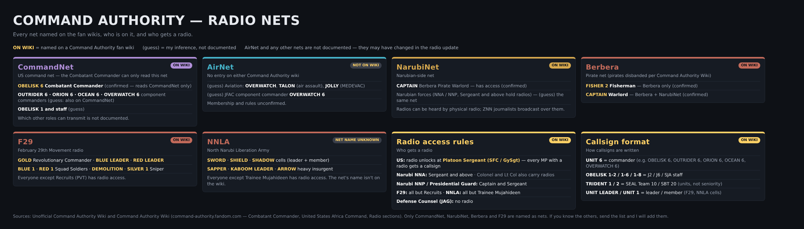
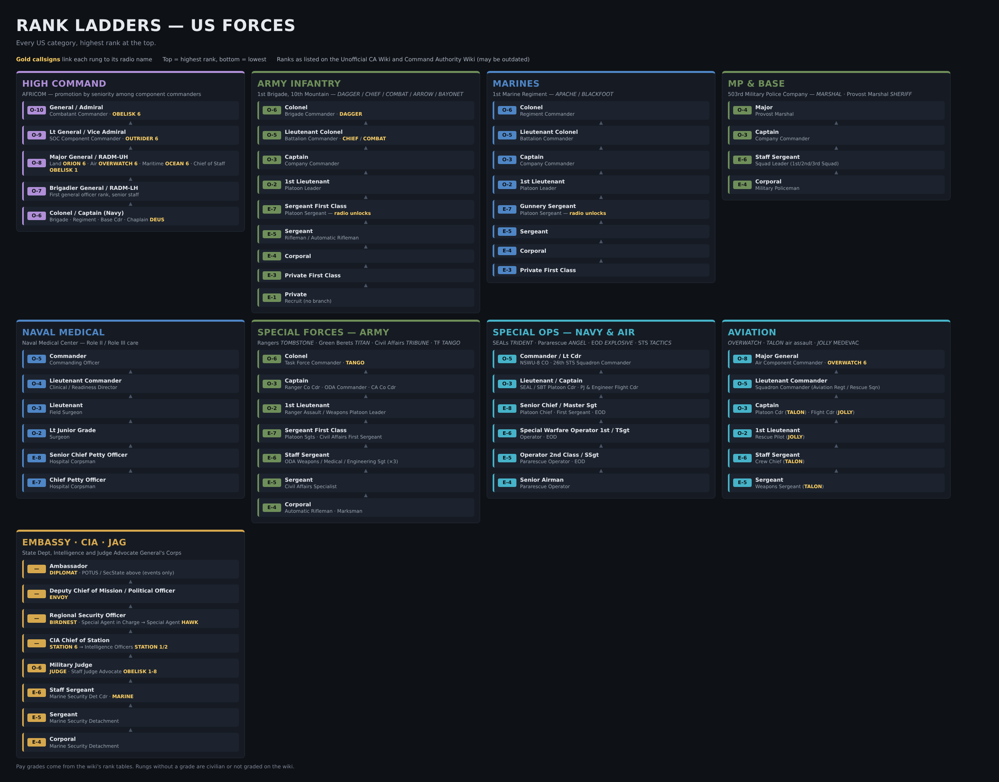
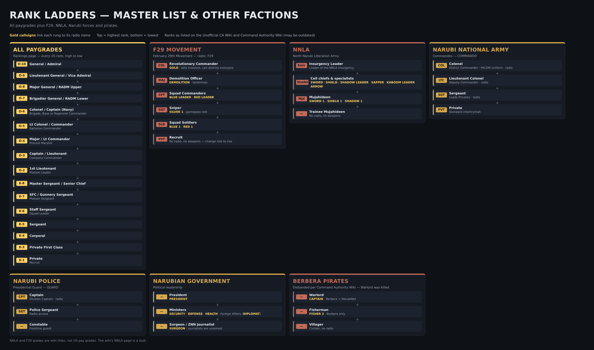

Gold = callsign/number written on the wiki or seen on the in-game radioWhite = number assigned by seniority from the wiki's rank tables (guess, in-game numbers unconfirmed)— = rank not listedUnit commanders end in 6
JOINT
OBELISK
U.S. Africa Command (AFRICOM)
| OBELISK 6 | General / Admiral — Combatant Commander | GEN/ADM (O-10) |
| OBELISK 1 | Chief of Staff | MG/RADM-UH (O-8) |
| OBELISK 1-2 | J2 Intelligence Officer | — |
| OBELISK 1-6 | J6 Communications Officer | — |
| OBELISK 1-8 | Staff Judge Advocate | — |
| DEUS | Command Chaplain | COL (O-6) |
ARMY
DAGGER / CHIEF / COMBAT
Brigade & Battalions
| DAGGER-6 | 1st Brigade — Brigade Commander | COL (O-6) |
| CHIEF-6 | 1st Battalion — Battalion Commander | LTC (O-5) |
| COMBAT-6 | 2nd Battalion — Battalion Commander | LTC (O-5) |
ARMY
ARROW
A Co, 2nd Bn, 33rd Infantry (Army)
| ARROW-6 | Company Commander | CPT (O-3) |
| ARROW-2 | 1st Platoon Leader | 1LT (O-2) |
| ARROW-3 | 2nd Platoon Leader | 1LT (O-2) |
| ARROW-4 | 1st Platoon Sergeant | SFC (E-7) |
| ARROW-5 | 2nd Platoon Sergeant | SFC (E-7) |
| (no callsign) | Sergeant / Corporal / PFC | SGT E-5 · CPL E-4 · PFC E-3 |
ARMY
BAYONET
B Co, 2nd Bn, 33rd Infantry (Army)
| BAYONET-6 | Company Commander | CPT (O-3) |
| BAYONET-2 | 1st Platoon Leader | 1LT (O-2) |
| BAYONET-3 | 2nd Platoon Leader | 1LT (O-2) |
| BAYONET-4 | 1st Platoon Sergeant | SFC (E-7) |
| BAYONET-5 | 2nd Platoon Sergeant | SFC (E-7) |
| (no callsign) | Sergeant / Corporal / PFC | SGT E-5 · CPL E-4 · PFC E-3 |
ARMY
WARRIOR
2nd Cavalry Division · callsign seen on DesertNet, job and rank inferred
| WARRIOR 6 | Division Commander | COL (O-6) |
ARMY
SHERPA
Support Battalion · confirmed in game on DesertNet
| SHERPA 6 | Support Battalion Commander | LTC (O-5) |
ARMY
ATTACK
A Troop, 1st Squadron, 2nd Cavalry · callsigns seen on DesertNet, jobs and ranks inferred
| ATTACK 6 | Troop Commander | CPT (O-3) |
| ATTACK 1-6 | 1st Platoon Leader | 1LT (O-2) |
| ATTACK 1-7 | 1st Platoon Sergeant | SFC (E-7) |
ARMY
BATTLE
B Troop, 2nd Cavalry · callsign seen on DesertNet, job and rank inferred
| BATTLE 6 | Troop Commander | CPT (O-3) |
UNIT UNKNOWN
CHOSIN / MEDIC
Callsigns seen on DesertNet, units not identified
| CHOSIN 6 | Commander (from the 6) | — |
| MEDIC 6 | Commander (from the 6) | — |
NAVY / USMC
APACHE
A Co, 1st Bn, 1st Marines
| APACHE-6 | Company Commander | CPT (O-3) |
| APACHE-2 | 1st Platoon Leader | 1LT (O-2) |
| APACHE-3 | 2nd Platoon Leader | 1LT (O-2) |
| APACHE-4 | 1st Platoon Sergeant | GySgt (E-7) |
| APACHE-5 | 2nd Platoon Sergeant | SFC (E-7) |
| (no callsign) | Sergeant / Corporal / PFC | SGT E-5 · CPL E-4 · PFC E-3 |
NAVY / USMC
BLACKFOOT
B Co, 1st Bn, 1st Marines
| BLACKFOOT-6 | Company Commander | CPT (O-3) |
| BLACKFOOT-2 | 1st Platoon Leader | 1LT (O-2) |
| BLACKFOOT-3 | 2nd Platoon Leader | 1LT (O-2) |
| BLACKFOOT-4 | 1st Platoon Sergeant | SFC (E-7) |
| BLACKFOOT-5 | 2nd Platoon Sergeant | SFC (E-7) |
| (no callsign) | Sergeant / Corporal / PFC | SGT E-5 · CPL E-4 · PFC E-3 |
ARMY
MARSHAL
503rd Military Police Company
| MARSHAL-6 | Company Commander | CPT (O-3) |
| MARSHAL-2 | 1st Squad Leader | SSG (E-6) |
| MARSHAL-3 | 2nd Squad Leader | SSG (E-6) |
| MARSHAL-4 | 3rd Squad Leader | SSG (E-6) |
| (no callsign) | Military Policeman | CPL (E-4) |
JOINT
COMPONENT CMDRS
AFRICOM component commanders (Command Authority Wiki)
| OUTRIDER 6 | SOC Component Commander | LTG/VADM (O-9) |
| ORION 6 | Land Component Commander (JFLCC) | MG (O-8) |
| OCEAN 6 | Maritime Component Commander | — |
| OVERWATCH 6 | Air Component Commander (JFACC) | MG (O-8) |
JOINT
OUTRIDER
Special Operations Command staff
| OUTRIDER-2 | Intelligence Officer | — |
| OUTRIDER-3 | Communications Officer | — |
ARMY
TANGO
Army Special Operations Task Force
| TANGO-6 | Task Force Commander | COL (O-6) |
ARMY
TOMBSTONE
75th Ranger Regiment
| TOMBSTONE-6 | Company Commander | CPT (O-3) |
| TOMBSTONE-2 | Assault Platoon Leader | 1LT (O-2) |
| TOMBSTONE-3 | Weapons Platoon Leader | 1LT (O-2) |
| TOMBSTONE-4 | Assault Platoon Sergeant | SFC (E-7) |
| TOMBSTONE-5 | Weapons Platoon Sergeant | SFC (E-7) |
| (no callsign) | Sergeant / Corporal | SGT E-5 · CPL E-4 |
ARMY
TITAN
212 ODA, 1st SFOG (Green Berets)
| TITAN-6 | ODA Commander | CPT (O-3) |
| TITAN-2 | Weapons Sergeant | SSG (E-6) |
| TITAN-3 | Medical Sergeant | SSG (E-6) |
| TITAN-4 | Engineering Sergeant | SSG (E-6) |
ARMY
TRIBUNE
91st Civil Affairs
| TRIBUNE-6 | Company Commander | CPT (O-3) |
| TRIBUNE-2 | First Sergeant | SFC (E-7) |
| TRIBUNE-3 | Civil Affairs Specialist | SGT (E-5) |
| TRIBUNE-4 | Civil Affairs Specialist | CPL (E-4) |
NAVY / USMC
TRIDENT
Naval Special Warfare Unit 8
| TRIDENT 1 | Blue Sqn, SEAL Team 10 — Platoon Commander | LT (O-3) |
| TRIDENT 2 | Special Boat Team 20 — Platoon Commander | LT (O-3) |
| TRIDENT-3 | SEAL Team 10 Platoon Chief | Senior Chief SO (E-8) |
| TRIDENT 2-7 | SBT 20 Platoon Chief | Senior Chief SB (E-8) |
| (no callsign) | Special Warfare / Boat Operators | 1st Class E-6 · 2nd Class E-5 |
| (no callsign) | NSWU-8 Commanding Officer | CDR (O-5) |
AIR FORCE
TACTICS / ANGEL
Special Tactics Squadron — Pararescue Flight
| TACTICS-6 | 26th Squadron Commander | LCDR (O-5) |
| ANGEL-6 | Pararescue Flight Commander | CPT (O-3) |
| ANGEL-2 | Flight First Sergeant | MSgt (E-8) |
| ANGEL-3 | Pararescue Operator | SSgt (E-5) |
| ANGEL-4 | Pararescue Operator | SrA (E-4) |
NAVY / USMC
EXPLOSIVE
EOD — Mobile Unit 3 / STS Engineer Flight
| EXPLOSIVE-6 | Engineer Flight Commander | CPT (O-3) |
| EXPLOSIVE-2 | EOD — senior | MSgt (E-8) |
| EXPLOSIVE-3 | EOD | TSgt (E-6) |
| EXPLOSIVE-4 | EOD | SSgt (E-5) |
JOINT
OVERWATCH
Joint Force Aviation Component staff
| OVERWATCH-2 | Communications Officer | — |
AIR FORCE
JOLLY
Expeditionary Rescue Squadron (MEDEVAC)
| JOLLY-6 | Squadron Commander | LCDR (O-5) |
| JOLLY-2 | 'A' Flight Commander | CPT (O-3) |
| JOLLY-3 | 'B' Flight Commander | CPT (O-3) |
| JOLLY-4 | 'A' Flight Rescue Pilot | 1LT (O-2) |
| JOLLY-5 | 'B' Flight Rescue Pilot | 1LT (O-2) |
ARMY
TALON
Aviation Regiment (Air Assault)
| TALON-6 | Squadron Commander | LCDR (O-5) |
| TALON-2 | A Co · 1st Platoon Commander | CPT (O-3) |
| TALON-3 | A Co · 2nd Platoon Commander | CPT (O-3) |
| TALON-4 | B Co · 1st Platoon Commander | CPT (O-3) |
| TALON-5 | B Co · 2nd Platoon Commander | CPT (O-3) |
| TALON-7…10 | Crew Chief (one per platoon) | SSG (E-6) |
| TALON-11…14 | Weapons Sergeant (one per platoon) | SGT (E-5) |
INTEL
INTEL
CIA · DIA · JFLC
| STATION 6 | Chief of Station (CIA) | civilian |
| STATION 1 / 2 | Intelligence Officers (CIA) | civilian |
| ORINON 1-2 | J2 Intelligence Officer (JFLC) | — |
| ORANGE | Defense Intelligence Agency | — |
| BLACK | Special Activity Center (CIA) | — |
STATE
EMBASSY
U.S. Embassy, Mekele
| DIPLOMAT | Ambassador & Min. of Foreign Affairs | civilian |
| ENVOY | Political Officer & Deputy Chief of Mission | civilian |
| BIRDNEST | Regional Security Officer | — |
| HAWK | Diplomatic Security — Special Agents | — |
| MARINE-6 | Detachment Commander | SSG (E-6) |
| MARINE-2/3 | Detachment Marines | SGT (E-5) |
| MARINE-4/5 | Detachment Marines | CPL (E-4) |
JOINT
JUDGE
Judge Advocate General's Corps
| JUDGE | Military Judge | COL/CAPT (O-6) |
| (No Radio) | Defense Counsel | — |
NAVY / USMC
BASE UNITS
Joint Base Hewitt
| OUTPOST | Joint Base Hewitt | — |
| EXPEDITION | Explosives / Engineering Command | — |
| WARDEN | Naval Consolidated Brigade | — |
| SHERIFF | Provost Marshal | — |
| ENGINEER | Mobile Construction Bn 11 (Seabees) | — |
JOINT
JSOC / FOREIGN
All-access only · work in progress
| BLUE | SEAL Team 6 / DEVGRU | — |
| GREEN | 1st SFOD-Delta · Chemical Co (CBRN) | — |
| RED | Regimental Reconnaissance Co | — |
| THISTLE | Special Boat Service (UK) | — |
| ROYAL | Special Air Service (UK) | — |
| MAPLE | CSOR · JTF2 (Canada) | — |
OPFOR
NNLA
North Narubi Liberation Army
| SWORD LEADER | Abu Zabad Cell chief | Sheikh |
| SWORD 1 | Abu Zabad Cell member | Mujahideen |
| SHIELD LEADER | Barah Cell chief | Sheikh |
| SHIELD 1 | Barah Cell member | Mujahideen |
| SHADOW LEADER | Intel & Assassinations Board | Sheikh |
| SHADOW 1 | Intel & Assassinations member | Mujahideen |
| SAPPER | Chief of Explosives (anti-personnel) | Sheikh |
| KABOOM LEADER | Chief of Explosives (anti-tank) | Sheikh |
| ARROW | Heavy Insurgent (RPG-7) | Sheikh |
OPFOR
PIRATES
Berbera Pirates (disbanded per Command Authority Wiki)
| CAPTAIN | Warlord | — |
| FISHER 2 | Fisherman | — |
OPFOR
F29 MOVEMENT
Rebels (radio: F29)
| GOLD | Revolutionary Commander | COL |
| BLUE LEADER | Blue Squad Commander | CPT |
| RED LEADER | Red Squad Commander | CPT |
| DEMOLITION | Demolition Officer | MAJ |
| SILVER 1 | Sniper | SGT |
| BLUE 1 / RED 1 | Squad Soldiers | SLD |
RANK LADDER
Paygrade → rank (Rankings page)
| E-1 | Private (PVT) |
| E-3 | Private First Class (PFC) |
| E-4 | Corporal (CPL) |
| E-5 | Sergeant (SGT) |
| E-6 | Staff Sergeant (SSG) |
| E-7 | SFC / Gunnery Sgt — Platoon Sgt |
| E-8 | Master Sgt / Senior Chief |
| O-2 | 1st Lieutenant — Platoon Leader |
| O-3 | Captain / Lieutenant — Company Cdr |
| O-5 | Lt Colonel / Commander — Battalion Cdr |
| O-6 | Colonel / Captain (Navy) — Brigade Cdr |
| O-7 | Brigadier General / RADM-LH |
| O-8 | Major General / RADM-UH |
| O-9 | Lieutenant General / VADM |
| O-10 | General / Admiral |
Only CommandNet, NarubiNet, Berbera and F29 are named as nets on the wikis. AirNet is not documented anywhere I could find, so its card is a guess. DesertNet is not on the wikis, but it was seen on the in-game radio.
ON WIKI
CommandNet
US command net — the Combatant Commander can only read this net
- OBELISK 6 Combatant Commander (confirmed — reads CommandNet only)
- OUTRIDER 6 · ORION 6 · OCEAN 6 · OVERWATCH 6 component commanders (guess: also on CommandNet)
- OBELISK 1 and staff (guess)
- Which other roles can transmit is not documented.
SEEN IN GAME
DesertNet
Not on either wiki, seen on the in-game radio
- ATTACK 6 · ATTACK 1-6 · ATTACK 1-7 (confirmed transmitting)
- BATTLE 6 · CHOSIN 6 · WARRIOR 6 · SHERPA 6 · MEDIC 6 (confirmed transmitting)
- Full membership and rules unknown.
NOT ON WIKI
AirNet
No entry on either Command Authority wiki
- (guess) Aviation: OVERWATCH, TALON (air assault), JOLLY (MEDEVAC)
- (guess) JFAC component commander OVERWATCH 6
- Membership and rules unconfirmed.
ON WIKI
NarubiNet
Narubian-side net
- CAPTAIN Berbera Pirate Warlord — has access (confirmed)
- Narubian forces (NNA / NNP, Sergeant and above hold radios) — (guess) the same net
- Radios can be heard by physical radio; ZNN journalists broadcast over them.
ON WIKI
Berbera
Pirate net (pirates disbanded per Command Authority Wiki)
- FISHER 2 Fisherman — Berbera only (confirmed)
- CAPTAIN Warlord — Berbera + NarubiNet (confirmed)
ON WIKI
F29
February 29th Movement radio
- GOLD Revolutionary Commander · BLUE LEADER · RED LEADER
- BLUE 1 · RED 1 Squad Soldiers · DEMOLITION · SILVER 1 Sniper
- Everyone except Recruits (PVT) has radio access.
NET NAME UNKNOWN
NNLA
North Narubi Liberation Army
- SWORD · SHIELD · SHADOW cells (leader + member)
- SAPPER · KABOOM LEADER · ARROW heavy insurgent
- Everyone except Trainee Mujahideen has radio access. The net's name isn't on the wiki.
ON WIKI
Radio access rules
Who gets a radio
- US: radio unlocks at Platoon Sergeant (SFC / GySgt) — every MP with a radio gets a callsign
- Narubi NNA: Sergeant and above · Colonel and Lt Col also carry radios
- Narubi NNP / Presidential Guard: Captain and Sergeant
- F29: all but Recruits · NNLA: all but Trainee Mujahideen
- Defense Counsel (JAG): no radio
ON WIKI
Callsign format
How callsigns are written
- UNIT 6 = commander (e.g. OBELISK 6, OUTRIDER 6, ORION 6, OCEAN 6, OVERWATCH 6)
- OBELISK 1-2 / 1-6 / 1-8 = J2 / J6 / SJA staff
- TRIDENT 1 / 2 = SEAL Team 10 / SBT 20 (units, not seniority)
- TRIDENT 2-7 = SBT 20 platoon chief (confirmed in game)
- UNIT 1-6 / 1-7 = 1st platoon leader / sergeant (ATTACK, seen in game, meaning inferred)
- UNIT LEADER / UNIT 1 = leader / member (F29, NNLA cells)
HIGH COMMAND
AFRICOM — promotion by seniority among component commanders
O-10
General / Admiral
Combatant Commander · OBELISK 6
▲
O-9
Lt General / Vice Admiral
SOC Component Commander · OUTRIDER 6
▲
O-8
Major General / RADM-UH
Land ORION 6 · Air OVERWATCH 6 · Maritime OCEAN 6 · Chief of Staff OBELISK 1
▲
O-7
Brigadier General / RADM-LH
First general officer rank, senior staff
▲
O-6
Colonel / Captain (Navy)
Division · Brigade · Regiment · Base Cdr · Chaplain DEUS
ARMY INFANTRY
1st Brigade, 10th Mountain — DAGGER / CHIEF / COMBAT / ARROW / BAYONET · 2nd Cavalry WARRIOR / ATTACK / BATTLE · Support Bn SHERPA
O-6
Colonel
Brigade Commander · DAGGER · Division Commander · WARRIOR
▲
O-5
Lieutenant Colonel
Battalion Commander · CHIEF / COMBAT · Support Battalion · SHERPA
▲
O-3
Captain
Company Commander
▲
O-2
1st Lieutenant
Platoon Leader
▲
E-7
Sergeant First Class
Platoon Sergeant — radio unlocks
▲
E-5
Sergeant
Rifleman / Automatic Rifleman
▲
E-4
Corporal
▲
E-3
Private First Class
▲
E-1
Private
Recruit (no branch)
MARINES
1st Marine Regiment — APACHE / BLACKFOOT
O-6
Colonel
Regiment Commander
▲
O-5
Lieutenant Colonel
Battalion Commander
▲
O-3
Captain
Company Commander
▲
O-2
1st Lieutenant
Platoon Leader
▲
E-7
Gunnery Sergeant
Platoon Sergeant — radio unlocks
▲
E-5
Sergeant
▲
E-4
Corporal
▲
E-3
Private First Class
MP & BASE
503rd Military Police Company — MARSHAL · Provost Marshal SHERIFF
O-4
Major
Provost Marshal
▲
O-3
Captain
Company Commander
▲
E-6
Staff Sergeant
Squad Leader (1st/2nd/3rd Squad)
▲
E-4
Corporal
Military Policeman
NAVAL MEDICAL
Naval Medical Center — Role II / Role III care
O-5
Commander
Commanding Officer
▲
O-4
Lieutenant Commander
Clinical / Readiness Director
▲
O-3
Lieutenant
Field Surgeon
▲
O-2
Lt Junior Grade
Surgeon
▲
E-8
Senior Chief Petty Officer
Hospital Corpsman
▲
E-7
Chief Petty Officer
Hospital Corpsman
SPECIAL FORCES — ARMY
Rangers TOMBSTONE · Green Berets TITAN · Civil Affairs TRIBUNE · TF TANGO
O-6
Colonel
Task Force Commander · TANGO
▲
O-3
Captain
Ranger Co Cdr · ODA Commander · CA Co Cdr
▲
O-2
1st Lieutenant
Ranger Assault / Weapons Platoon Leader
▲
E-7
Sergeant First Class
Platoon Sgts · Civil Affairs First Sergeant
▲
E-6
Staff Sergeant
ODA Weapons / Medical / Engineering Sgt (×3)
▲
E-5
Sergeant
Civil Affairs Specialist
▲
E-4
Corporal
Automatic Rifleman · Marksman
SPECIAL OPS — NAVY & AIR
SEALs TRIDENT · Pararescue ANGEL · EOD EXPLOSIVE · STS TACTICS
O-5
Commander / Lt Cdr
NSWU-8 CO · 26th STS Squadron Commander
▲
O-3
Lieutenant / Captain
SEAL / SBT Platoon Cdr · PJ & Engineer Flight Cdr
▲
E-8
Senior Chief / Master Sgt
Platoon Chief · First Sergeant · EOD
▲
E-6
Special Warfare Operator 1st / TSgt
Operator · EOD
▲
E-5
Operator 2nd Class / SSgt
Pararescue Operator · EOD
▲
E-4
Senior Airman
Pararescue Operator
AVIATION
OVERWATCH · TALON air assault · JOLLY MEDEVAC
O-8
Major General
Air Component Commander · OVERWATCH 6
▲
O-5
Lieutenant Commander
Squadron Commander (Aviation Regt / Rescue Sqn)
▲
O-3
Captain
Platoon Cdr (TALON) · Flight Cdr (JOLLY)
▲
O-2
1st Lieutenant
Rescue Pilot (JOLLY)
▲
E-6
Staff Sergeant
Crew Chief (TALON)
▲
E-5
Sergeant
Weapons Sergeant (TALON)
EMBASSY · CIA · JAG
State Dept, Intelligence and Judge Advocate General's Corps
—
Ambassador
DIPLOMAT · POTUS / SecState above (events only)
▲
—
Deputy Chief of Mission / Political Officer
ENVOY
▲
—
Regional Security Officer
BIRDNEST · Special Agent in Charge → Special Agent HAWK
▲
—
CIA Chief of Station
STATION 6 → Intelligence Officers STATION 1/2
▲
O-6
Military Judge
JUDGE · Staff Judge Advocate OBELISK 1-8
▲
E-6
Staff Sergeant
Marine Security Det Cdr · MARINE
▲
E-5
Sergeant
Marine Security Detachment
▲
E-4
Corporal
Marine Security Detachment
ALL PAYGRADES
Rankings page — every US rank, high to low
O-10
General / Admiral
▲
O-9
Lieutenant General / Vice Admiral
▲
O-8
Major General / RADM Upper
▲
O-7
Brigadier General / RADM Lower
▲
O-6
Colonel / Captain (Navy)
Division, Brigade, Base or Regiment Commander
▲
O-5
Lt Colonel / Commander
Battalion Commander
▲
O-4
Major / Lt Commander
Provost Marshal
▲
O-3
Captain / Lieutenant
Company Commander
▲
O-2
1st Lieutenant
Platoon Leader
▲
E-8
Master Sergeant / Senior Chief
▲
E-7
SFC / Gunnery Sergeant
Platoon Sergeant
▲
E-6
Staff Sergeant
Squad Leader
▲
E-5
Sergeant
▲
E-4
Corporal
▲
E-3
Private First Class
▲
E-1
Private
Recruit
F29 MOVEMENT
February 29th Movement — radio: F29
COL
Revolutionary Commander
GOLD · sets missions, can dismiss everyone
▲
MAJ
Demolition Officer
DEMOLITION · landmines
▲
CPT
Squad Commanders
BLUE LEADER · RED LEADER
▲
SGT
Sniper
SILVER 1 · gamepass role
▲
SLD
Squad Soldiers
BLUE 1 · RED 1
▲
PVT
Recruit
No radio, no weapons — change role to rise
NNLA
North Narubi Liberation Army
Emir
Insurgency Leader
Leader of the NNLA insurgency
▲
Sheikh
Cell chiefs & specialists
SWORD / SHIELD / SHADOW LEADER · SAPPER · KABOOM LEADER · ARROW
▲
Mjd
Mujahideen
SWORD 1 · SHIELD 1 · SHADOW 1
▲
—
Trainee Mujahideen
No radio, no weapons
NARUBI NATIONAL ARMY
Commandos — COMMANDO
COL
Colonel
District Commander · HICOM uniform · radio
▲
LTC
Lieutenant Colonel
Deputy Commander · radio
▲
SGT
Sergeant
Leads Privates · radio
▲
PVT
Private
Standard infantryman
NARUBI POLICE
Presidential Guard — GUARD
CPT
Captain
Division Captain · radio
▲
SGT
Police Sergeant
Radio access
▲
—
Constable
Frontline guard
NARUBIAN GOVERNMENT
Political leadership
—
President
PRESIDENT
▲
—
Ministers
SECURITY · DEFENSE · HEALTH · Foreign Affairs (DIPLOMAT)
▲
—
Surgeon / ZNN Journalist
SURGEON · journalists are unarmed
BERBERA PIRATES
Disbanded per Command Authority Wiki — Warlord was killed
—
Warlord
CAPTAIN · Berbera + NarubiNet
▲
—
Fisherman
FISHER 2 · Berbera only
▲
—
Villager
Civilian, no radio
How promotion works. Players are promoted automatically when a role above them opens up. From O-6 up, the top jobs are filled by seniority: the longest-serving component commander becomes the next Combatant Commander. The two Command Authority wikis differ slightly on which component commander feeds which job, so both readings are shown below.
FULL PATH: PRIVATE TO GENERAL
Highest rank at the top
O-10
General / Admiral
Combatant Commander · OBELISK 6 · only removable by POTUS / SecDef during events
▲
O-9
Lieutenant General / Vice Admiral
SOC Component Commander · OUTRIDER 6 · top of the special forces line
▲
O-8
Major General / Rear Admiral (Upper)
Land ORION 6 · Air OVERWATCH 6 · Maritime OCEAN 6 · Chief of Staff OBELISK 1
▲
O-7
Brigadier General / Rear Admiral (Lower)
First general officer rank, senior staff
▲
O-6
Colonel / Captain (Navy)
Division WARRIOR · Brigade DAGGER · Regiment · Base Commander · Task Force Commander TANGO
▲
O-5
Lieutenant Colonel / Commander
Battalion Commander · CHIEF / COMBAT · Support Battalion · SHERPA
▲
O-3
Captain / Lieutenant
Company Commander
▲
O-2
1st Lieutenant
Platoon Leader
▲
E-7
Sergeant First Class / Gunnery Sergeant
Platoon Sergeant · radio unlocks · next in line for Platoon Leader
▲
E-5
Sergeant
▲
E-4
Corporal
▲
E-3
Private First Class
▲
E-1
Private
Starting point for new players
O-6 TO COMBATANT COMMANDER
Which job feeds which
| ORION 6 | Land Component Commander (infantry / Marine / MP line) | MG (O-8) |
| OUTRIDER 6 | SOC Component Commander (special forces line) | LTG (O-9) |
| OCEAN 6 | Maritime Component Commander (naval line) | top naval job |
| OVERWATCH 6 | Air Component Commander (air line) | MG (O-8) |
| OBELISK 1 | Chief of Staff | MG (O-8) |
| OBELISK 6 | Combatant Commander | GEN/ADM (O-10) |
| DEUS | Command Chaplain: does not promote | COL (O-6) |
WHO BECOMES GENERAL
Seniority rules from the wikis
- Combatant Commander page: the four flag officers second in line are the Land, Maritime and Air component commanders and the SOC Commander. The one who has served longest takes the job when it opens.
- AFRICOM structure table: SOC Commander promotes into Combatant Commander by seniority. Land Commander promotes into Combatant Commander by seniority, competing with the Chief of Staff and the SOC Commander.
- AFRICOM structure table: Air Commander promotes into Chief of Staff by seniority. Maritime is the top of the naval line, and naval operations are mostly absent from the game.
- Events: the Combatant Commander can promote into POTUS or SecDef.
- The pages disagree on whether Maritime and Air feed the Combatant Commander directly or via Chief of Staff. Check in game.
Path finder. Type a rank, paygrade or callsign, pick your line, and see every step to O-10. Dashed steps are gaps the wikis do not fill.
Who gets what first. The wikis disagree, so both readings are shown. Reading A: all four component commanders compete directly for O-10. Reading B: SOC, Land and the Chief of Staff compete, and Air must go through Chief of Staff first. Check in game before relying on either.
HEAD TO HEAD
Pick two seats
MOVES TO O-10
Moves each seat needs, under each reading
VACANCY SIMULATOR
Callsign lookup. Search a callsign, job or unit to see the rank and reporting chain. Reporting chains are inferred from unit structure, because the wikis publish no reporting tree.
Rank translator. Equivalent ranks by paygrade, as written on the wikis. — means not listed. E-2 and O-1 are not on the wiki rank tables.
* The wikis list Lt Commander as O-5 for aviation squadron commanders. In the real US military, Lt Commander is O-4.
* The wikis list Lt Commander as O-5 for aviation squadron commanders. In the real US military, Lt Commander is O-4.
These sheets were made before WARRIOR, SHERPA, ATTACK, BATTLE, CHOSIN, MEDIC, TRIDENT 2-7 and DesertNet were added. The Callsigns and Radio nets tabs are current.








About this site. It is an unofficial fan project and is not affiliated with Chesapeake Studios, Blue Canopy, Red Parasol or Roblox. Callsigns and ranks come from the Unofficial Command Authority Wiki and the Command Authority Wiki on Fandom; numbers marked as a guess were assigned by seniority and may differ in game. WARRIOR, SHERPA, ATTACK, BATTLE, CHOSIN, MEDIC and DesertNet come from in-game radio screenshots taken on 9 November 2026. TRIDENT 2-7 was confirmed by the player holding it. Game details change often, so check the in-game radio and the game's Discord.